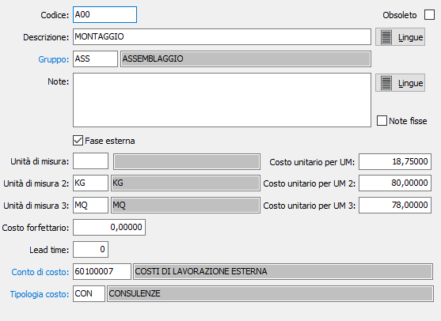

Fasi di lavorazione
La finestra consente l'inserimento delle fasi di lavorazione che andranno poi a comporre il ciclo di lavorazione dei singoli prodotti.

CODICE: Codice alfanumerico di 8 caratteri, a libera scelta dell'utente, per individuare la fase attiva. Sul campo sono attive le funzioni di ricerca (F9) sulla tabella stessa.
DESCRIZIONE: Campo alfanumerico di 50 caratteri per inserire la descrizione della fase attiva.
LINGUE: bottone che attiva la tabella di memorizzazione della descrizione in esame nelle varie lingue utilizzate dall’utente.
GRUPPO: codice del gruppo fase relativo alla fase attiva. Sul campo sono attive le funzioni di ricerca (F9) sulla tabella stessa.
NOTE: campo note esteso per descrivere ulteriormente la fase di lavorazione.
LINGUE: bottone che attiva la tabella di memorizzazione delle note estese in esame nelle varie lingue utilizzate dall’utente.
COSTO UNITARIO: costo della fase di lavorazione attiva relativo all'unità di misura primaria della lavorazione, decisa in fase di assegnazione al ciclo di lavorazione.
FASE ESTERNA: definisce se la fase riguarda una lavorazione esterna (casella con segno di spunta) oppure interna (casella vuota).
UNITÀ DI MISURA 2: eventuale seconda unità di misura della lavorazione.
COSTO UNITARIO UNITÀ DI MISURA 2: eventuale costo della fase di lavorazione attiva relativo alla seconda unità di misura.
UNITÀ DI MISURA 3: eventuale terza unità di misura della lavorazione.
COSTO UNITARIO UNITÀ DI MISURA 3: eventuale costo della fase di lavorazione attiva relativo alla seconda unità di misura.
COSTO FORFETTARIO: eventuale costo forfettario della fase di lavorazione. Se presente non sarà più utilizzato il costo per unità di misura.
LEADTIME: non utilizzato.
CONTO DI COSTO/TIPOLOGIA COSTO: vengono utilizzati per la creazione delle righe degli ordini terzisti e riportati sulle righe create; viene utilizzato il costo oppure il tipo costo a seconda della configurazione attiva.
OBSOLETO: flag attivabile dall’utente per inibire il possibile utilizzo dell’elemento di tabella in esame nelle successive transazioni.